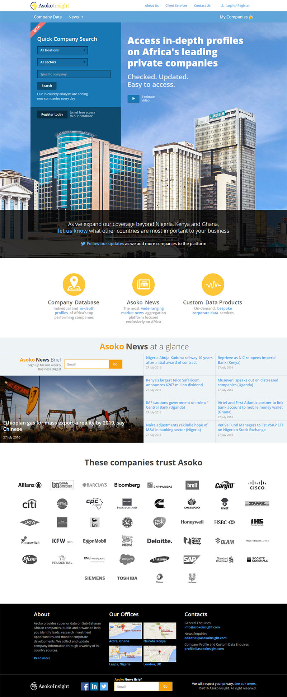

AsokoInsight
AsokoInsight is a startup that provides information about companies in South Africa.
They wanted to redesign their site in order to make their core functionality more accessible and easier to use.
I focused on their main usecase, and in the end we had a really simple way of finding information about South Africa companies, without concentration on insignificant stuff for business. I also participated in programming interface with html/css/less.